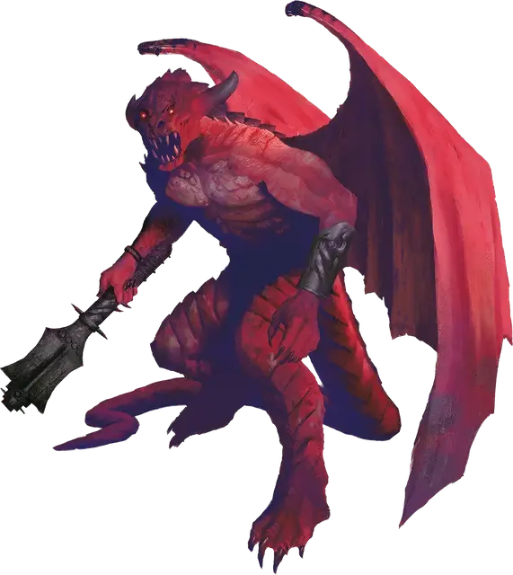

Исчадие преисподней
Pit Fiend
Большое Исчадие (Дьявол), законно-злое

Класс Доспеха 19 (природный доспех)
Хиты 300 (24к10 + 168)
Скорость 30 футов, летая 60 футов
| мод | спас | ||
|---|---|---|---|
| СИЛ | 26 | +8 | +8 |
| ЛОВ | 14 | +2 | +8 |
| ТЕЛ | 24 | +7 | +13 |
| мод | спас | ||
|---|---|---|---|
| ИНТ | 22 | +6 | +6 |
| МДР | 18 | +4 | +10 |
| ХАР | 24 | +7 | +7 |
Сопротивление урону холод; дробящий, колющий, рубящий от немагических атак, кроме нанесённых посеребрённым оружием
Иммунитет к урону огонь, яд
Иммунитет к состояниям отравление
Чувства истинное зрение 120 футов, пассивное Восприятие 14
Языки Инфернальный, Телепатия 120 фт.
Опасность 20 (25000 опыта)
Бонус мастерства +6
Особенности
Аура страха. Все враждебные исчадию преисподней существа, начинающие ход в пределах 20 футов от исчадия преисподней, должны совершать спасбросок Мудрости Сл 21, если исчадие преисподней дееспособно. При провале существо становится испуганным до начала своего следующего хода. Если спасбросок был успешным, оно получает иммунитет к Ауре страха этого исчадия на следующие 24 часа.
Сопротивление магии. Исчадие преисподней совершает с преимуществом спасброски от заклинаний и прочих магических эффектов.
Магическое оружие. Атаки оружием исчадия преисподней являются магическими.
Врождённое колдовство. Базовой характеристикой исчадия преисподней является Харизма (Сл спасброска от заклинания 21). Исчадие преисподней может накладывать следующие заклинания, не нуждаясь в материальных компонентах:
• Неограниченно: обнаружение магии [detect magic], огненный шар [fireball];
• 3/день каждое: огненная стена [wall of fire], удержание чудовища [hold monster].
Вариант: Призыв дьявола. У некоторых дьяволов может быть действие, позволяющее им призывать других дьяволов.
Призыв дьявола (1/день). Дьявол выбирает, кого призвать, и пытается это сделать. Исчадие преисподней призывает 2к4 бородатых дьявола (Барбазу) [bearded devil], 1к4 шипастых дьявола (Гаматула) [barbed devil] или одну эринию [erinyes] без шанса провала.
Призванный дьявол появляется в свободном пространстве в пределах 60 футов от призывателя, и действует как его союзник, не имеющий способности призывать дьяволов. Он призывается на 1 минуту или пока призыватель не умрёт или действием его не отпустит.
Действия
Мультиатака. Исчадие преисподней совершает четыре атаки: одну укусом, одну когтём, одну булавой, и одну хвостом.
Укус. Рукопашная атака оружием: +14 к попаданию, досягаемость 5 футов, одна цель. Попадание: Колющий урон 22 (4к6 + 8). Цель должна преуспеть в спасброске Телосложения Сл 21, иначе станет отравленной. Будучи отравленной таким образом, цель не может восстанавливать хиты, и получает урон ядом 21 (6к6) в начале каждого своего хода. Отравленная цель может повторять этот спасбросок в конце каждого своего хода, оканчивая эффект на себе при успехе.
Коготь. Рукопашная атака оружием: +14 к попаданию, досягаемость 10 футов, одна цель. Попадание: Рубящий урон 17 (2к8 + 8).
Булава. Рукопашная атака оружием: +14 к попаданию, досягаемость 10 футов, одна цель. Попадание: Дробящий урон 15 (2к6 + 8) плюс урон огнём 21 (6к6).
Хвост. Рукопашная атака оружием: +14 к попаданию, досягаемость 10 футов, одна цель. Попадание: Дробящий урон 24 (3к10 + 8).
Описание
Безоговорочные повелители большинства других дьяволов, исчадия преисподней служат напрямую эрцгерцогам и эрцгерцогиням Девяти Преисподних, и выполняют их желания. Эти могучие дьяволы — генералы Девяти Преисподних, ведущие в битву инфернальные легионы.
С их гипертрофированным чувством собственного превосходства и права повелевать другими, исчадия преисподней формируют некую гротескную аристократию инфернального царства. Эти доминирующие тираны-манипуляторы плетут внутри сложной и опасной политики Девяти Преисподних заговоры с целью уничтожения всего, что стоит между ними и их желаниями.
Исчадие преисподней представляет собой громадное чудовище с подобным кнуту хвостом и огромными крыльями, в которые он заворачивается как в плащ. Его тело покрыто крепчайшей чешуёй, а с клыкастой пасти капает яд, который может свалить с ног даже самое крепкое смертное существо. Исчадия преисподней бесстрашны в бою, они стараются сойтись в поединке один-на-один с самым сильным врагом, демонстрируя всем своё превосходство и надменность, которая не позволяет им допустить и мысли о возможности поражения.
См. дополнительно статью: "Бестиарий: Дьяволы"